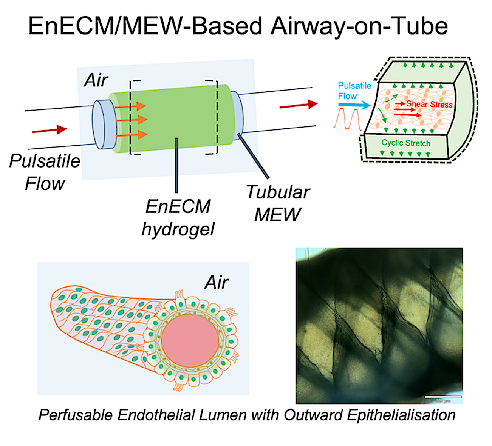
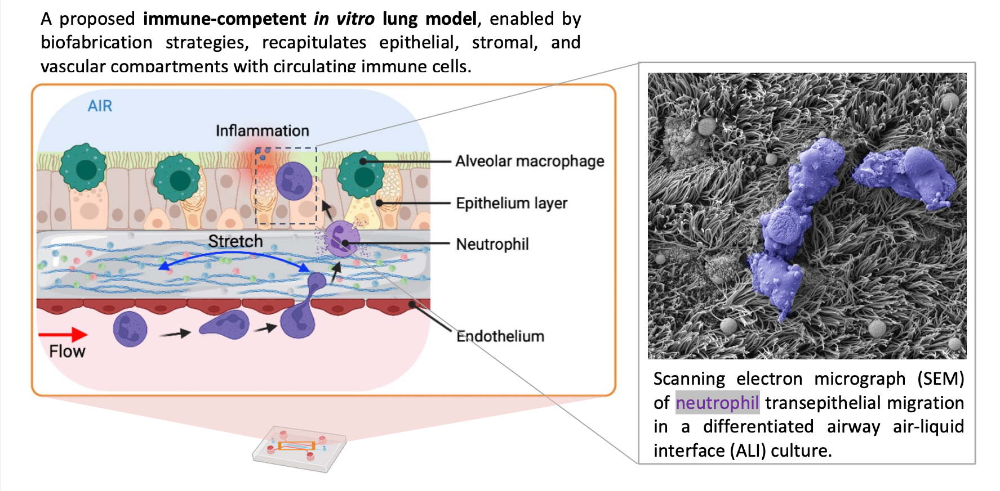
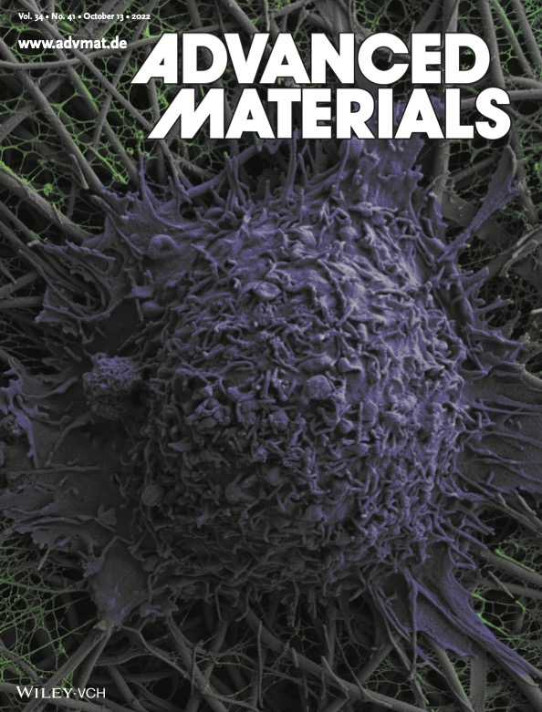
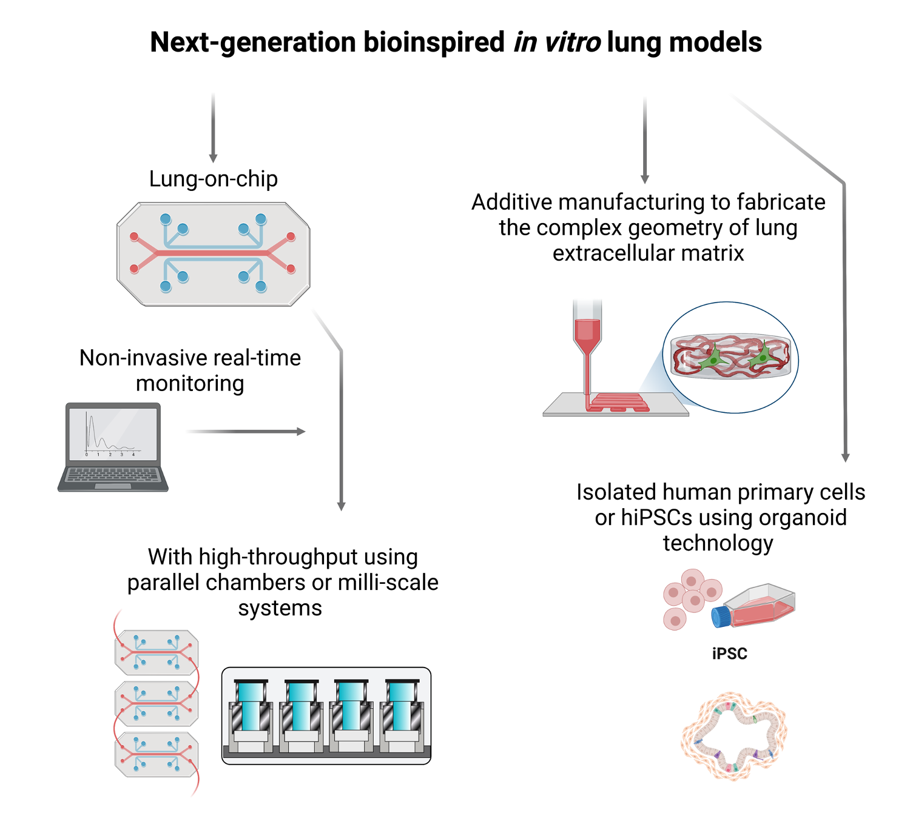
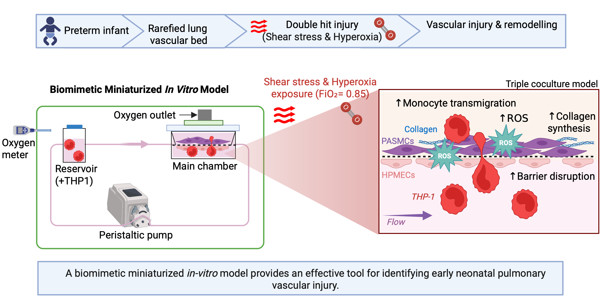

Publications
Selected Publications

Hydrogel-Based Airway-on-Tube with Perfusable Endothelial Lumen and Outward Epithelialization
A hydrogel-based airway-on-tube platform featuring a perfusable endothelial lumen and outward epithelialization, enabling more physiologically relevant modeling of airway biology and vascular interactions.
Read Article
Breathing immunity into in vitro lung models
This state of the art review examines the development of immune-competent in vitro lung models and their potential to improve disease modelling and therapeutic discovery. It highlights key challenges in integrating immune cells while discussing emerging solutions through organ-on-chip technologies, tunable extracellular matrices, bioprinting, and engineered microvascular networks.
Read Article
Real-Time Measurement of Cell Mechanics as a Clinically Relevant Readout of an In Vitro Lung Fibrosis Model Established on a Bioinspired Basement Membrane
Demonstrates how cell mechanical properties can serve as a clinically relevant readout for fibrosis progression using a biomimetic lung tissue model.
Read Article
Biomimetic In Vitro Lung Models: Current Challenges and Future Perspective
A Perspective discussing the current challenges and potential strategies toward not only bioinspired but truly biomimetic lung models.
Read Article
Fabrication Strategies for Bioinspired and Functional Lung-on-Chips
Overview of fabrication approaches used to develop advanced lung-on-chip platforms with improved physiological relevance and functionality.
Read Article
A Biomimetic Miniaturized In Vitro Model to Target Early Markers of Neonatal Pulmonary Vascular Injury
Miniaturized biomimetic model developed to investigate early pulmonary vascular injury mechanisms relevant to neonatal lung disease.
Read Article